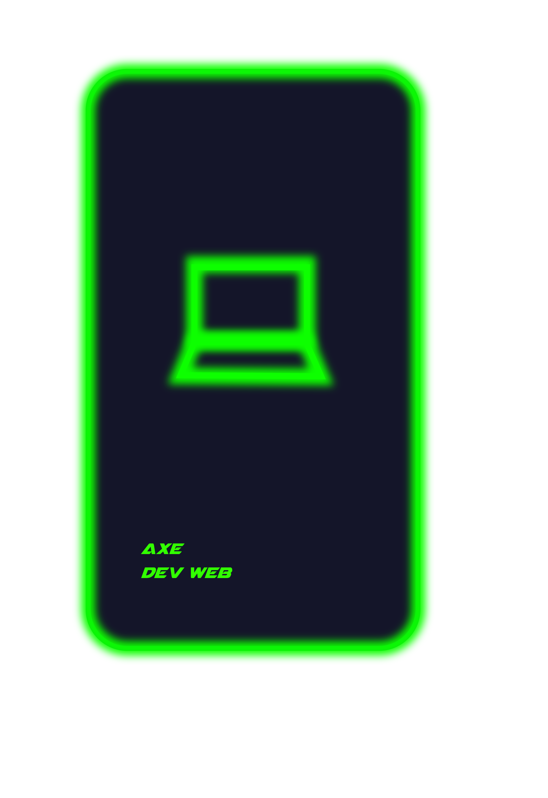
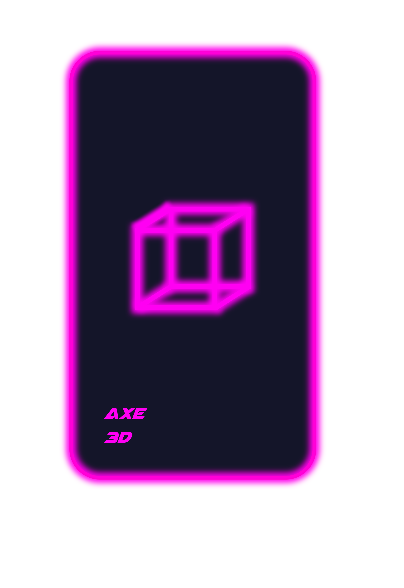
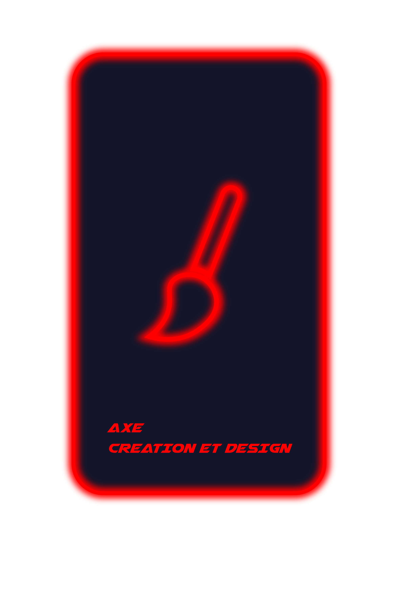
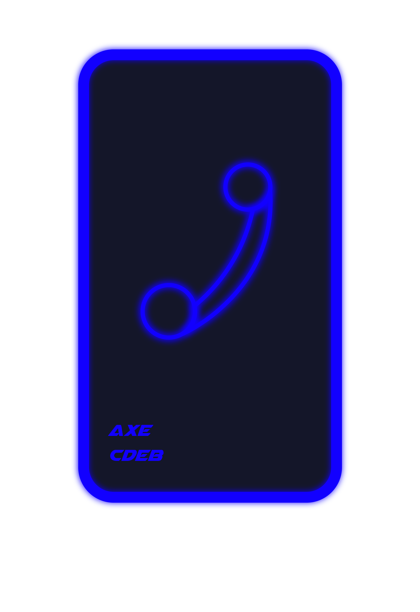

Bienvenue à toi Joueur, je me nomme P. M.
Je suis l'ancien directeur de l'école dans laquelle tu te trouves.
Il y a de cela 50 ans maintenant, j'ai disparu. Le monde voulait avoir accès
à ma base de données regroupant chacune de mes connaissances secrètes
qui m’ont conduit à ma richesse, c'est donc pourquoi j'ai décidé
decidé de me cacher et personnes n'a reussit a me trouver depuis.

Si tu es tombé(e) ici croit le ou pas mais se n'est pas
par hasard...
Plusieurs personnes ont essayé avant toi mais non
pas réussit à aller jusqu'au bout...
En seras tu-capable?
Comme tu as pû le remarquer j'ai laissé ma clé USB porte bonheur
Prends y grandement soin !
Tu y trouveras à l'intérieur plusieurs dossiers comportant des missions que tu devras résoudre,
plusieurs dossier ne peuvent être ouvert seulement par des mots de passe à toi de les trouver
en suivant le chemin que j'ai tracé.
Ne t'inquiète pas, je t'ai quand même laissé quelques une de mes notes qui pourrait te servir.
Bon courage ! Maintenant à toi de jouer…